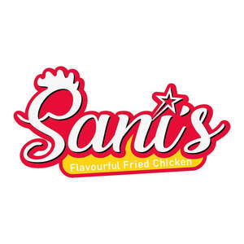

Trade Mark Journal No.2026/005 30 January 2026
UK00004295182 14 November 2025 (9,16,21,29,30,35,41,43,45)

- Class 9
- Mobile apps; Software for mobile phones; Mobile phones; Application software for mobile phones; Mobile software; Downloadable software applications for mobile phones; Downloadable applications for use with mobile devices; Downloadable applications for mobile devices; Software applications for use with mobile devices; Software applications for mobile devices; Software and applications for mobile devices; Application software for mobile devices; Devices for hands-free use of mobile phones; Downloadable emoticons for mobile phones; Downloadable mobile applications; Computer application software for mobile phones; Downloadable mobile applications for use with wearable computer devices; Computer software for mobile phones; Mobile application software; Downloadable graphics for mobile phones; Electronic game software for mobile phones; Displays for mobile phones; Downloadable ringtones for mobile phones.
- Class 16
- Menus.
- Class 21
- Dinner services; Serving dishes.
- Class 29
- Seafood; Fish-based snack food; Soy-based food bars; Meat-based snack food; Vegetarian charcuterie; Cooked seafood; Vegetable-based snack food.
- Class 30
- Sushi; Meal; Pizza; Prepared pizza meals; Pizza sauces.
- Class 35
- Restaurant management for others; Business management of restaurants; Online ordering services in the field of restaurant take-out and delivery; On-line ordering services in the field of restaurant take-out and delivery; Business advice relating to restaurant franchising; Business management assistance in the establishment and operation of restaurants; Business management of resort hotels; Business management assistance in the operation of restaurants; Business management of car parking facilities; Hotel management service [for others]; Business assistance relating to franchising; Business advice relating to franchising; Franchising (Business advice relating to -); Business advice and consultancy relating to franchising; Business advertising services relating to franchising; Provision of business advice relating to franchising; Franchising (Business advisory services relating to -); Business advisory services relating to franchising; Business management assistance in the field of franchising; Provision of business information relating to franchising; Business advisory services relating to franchising of a motor dealership; Franchising services providing business assistance; Franchising services providing marketing assistance; Business management advisory services relating to franchising; Business assistance relating to the establishment of franchises; Provision of assistance [business] in the establishment of franchises; Assistance in franchised commercial business management; Provision of assistance [business] in the operation of franchises; Advice in the running of establishments as franchises; Advisory services (Business -) relating to the establishment of franchises; Business advisory services relating to the establishment and operation of franchises; Management advisory services related to franchising; Advisory services (Business -) relating to the operation of franchises; Providing assistance in the management of franchised businesses; Business assistance relating to starting and running a franchise; Administration of the business affairs of franchises; Advisory services relating to the operation of franchises; Assistance in business management within the framework of a franchise contract; Business marketing consultancy; Business management of retail outlets; Planning concerning business management, namely, searching for partners for amalgamations and business take-overs as well as for business establishments; Advisory services relating to publicity for franchisees; Business management of wholesale and retail outlets; Business acquisitions consultation; Business relocation consulting; Business marketing consultation services; Business services relating to the establishment of businesses; Business advice relating to growth financing; Consultancy regarding business organisation and business economics; Business merger consultation; Business management consultancy via the Internet; Business marketing services; Consultancy relating to business acquisition; Business marketing consulting services; Assistance in product commercialization, within the framework of a franchise contract; Business planning and business continuity consulting; Business management advice relating to manufacturing business; Business management of wholesale outlets; Providing assistance in the field of business management within the framework of a franchise contract; Business organization and operation consultancy; Business strategy development services; Business recruitment consultancy; Business merger services; Professional business consultation relating to the operation of businesses; Business services relating to the arrangement of joint ventures; Business management services relating to the acquisition of businesses; Business consultancy; Business management for a trade company and for a service company; Business acquisitions; Strategic business consultancy; Services rendered by a franchisor, namely, assistance in the running or management of industrial or commercial enterprises; Development of concepts for business economy; Business consultancy services relating to manufacturing; Consultancy relating to business advertising; Business advice relating to strategic marketing; Consultancy relating to the establishment and running of businesses; Consultations relating to business mergers; Business organization consultancy; Business strategy services; Business consultancy to firms; Trade marketing [other than selling]; Business consultancy services relating to insolvency; Business management services relating to the development of businesses; Acquisitions (Business -) consulting services; Business planning consultancy; Provision of business information relating to joint ventures; Business promotion; Consultancy services regarding business strategies; Business process management consultancy; Development of marketing concepts; Business advice relating to marketing; Marketing (Business advice relating to -); Business management consultancy, also via the Internet; Business strategy and planning services; Business advice relating to marketing management consultations; Advice relating to the business operation of fitness clubs; Business consultancy services relating to product development; Business consulting for enterprises; Business appraisal consultancy; Business advisory services relating to the establishment of motor dealership; Business organisation consulting; Computerised business promotion; Business consultancy services for digital transformation; Business analysis of markets; Relocation services for business; Business relocation services; Consultations relating to business acquisitions; Marketing consultancy; Business consulting; Business management for shops; Providing business management and operational assistance to commercial businesses; Business consultancy services relating to the marketing of fund raising campaigns; Commercial business management; Consultancy relating to business planning; Business organisation consultancy; Business promotion services; Merchandising; Providing assistance in the field of product commercialization within the framework of a franchise contract; Consultations relating to business promotion; Business consulting services for digital transformation; Business management of theaters; Business brokerage services; Consultations relating to business advertising; Business research for new businesses; Business process management and consulting; Outsourcing services in the field of business operations; Business management and organization consultancy; Appraisal of business opportunities; Promotion [advertising] of business; Business consultation relating to advertising; Business mergers (Advice relating to -); Business advice relating to mergers; Development of marketing strategies and concepts; Advertisement via mobile phone networks; Retail services in relation to mobile phones.
- Class 41
- Education services relating to business franchise management; Training relating to the restaurant industry; Training services relating to retail marketing; Training courses in strategic planning relating to advertising, promotion, marketing and business.
- Class 43
- Sushi restaurant services; Fast-food restaurant services; Hotel restaurant services; Take-out restaurant services; Bar and restaurant services; Restaurant and bar services; Take-away restaurant services; Carvery restaurant services; Restaurant services; Ramen restaurant services; Salad bars [restaurant services]; Tempura restaurant services; Restaurant reservation services; Washoku restaurant services; Restaurants; Carry-out restaurants; Japanese restaurant services; Self-service restaurant services; Grill restaurants; Mobile restaurant services; Reservation of restaurants; Spanish restaurant services; Booking of restaurant seats; Udon and soba restaurant services; Serving food and drink for guests in restaurants; Catering in fast-food cafeterias; Serving food and drink in restaurants and bars; Restaurants (Self-service -); Self-service restaurants; Tourist restaurants; Restaurant services for the provision of fast food; Restaurant services incorporating licensed bar facilities; Bistro services; Fast food restaurants; Delicatessens [restaurants]; Providing food and drink for guests in restaurants; Provision of food and drink in restaurants; Providing restaurant services; Eateries; Restaurant information services; Providing food and drink in restaurants and bars; Restaurant services provided by hotels; Catering of food and drinks; Food and drink catering; Catering of food and drink; Catering (Food and drink -); Food and drink catering for banquets; Serving food and drink in doughnut shops; Brasserie services; Reservation and booking services for restaurants and meals; Cafe services; Hotel catering services; Food and drink catering for institutions; Providing food and drink in bistros; Agency services for reservation of restaurants; Hotel reservations; Serving food and drink in Internet cafes; Takeaway food and drink services; Take-away food and drink services; Food and drink catering for cocktail parties; Cocktail lounge buffets; Takeaway food services; Take-away food services; Serving food and drink for guests; Resort hotel services; Making reservations and bookings for restaurants and meals; Providing food and drink in doughnut shops; Catering services for company cafeterias; Serving food and drinks; Catering for the provision of food and drink; Café services; Hotel reservation services; Reservation of hotel accommodation; Hospitality services [food and drink]; Take-away fast food services; Providing reviews of restaurants and bars; Corporate hospitality (provision of food and drink); Providing food and drink in Internet cafes; Snack bar services; Night club services [provision of food]; Providing food and drink for guests; Mobile catering; Mobile catering services.
- Class 45
- Licensing of franchise concepts; Legal advice relating to franchising; Consultancy services relating to the legal aspects of franchising; Professional legal consultations relating to franchising.
Sanis franchising group